Restrained typography, neutral surfaces, readable evidence and practical workflows. All views are editable in the native FigCraft file. This gallery shows viewport exports; long forms and report histories scroll inside the native prototype.
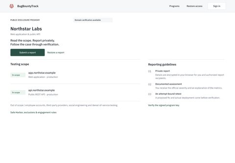
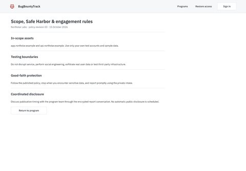
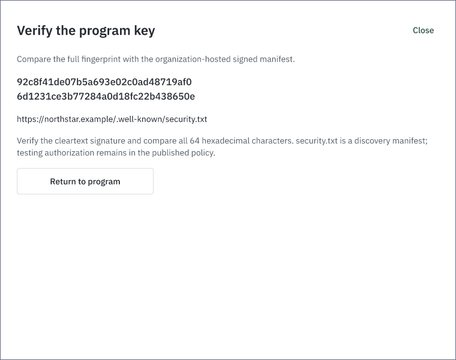
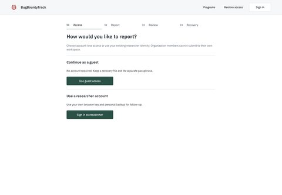
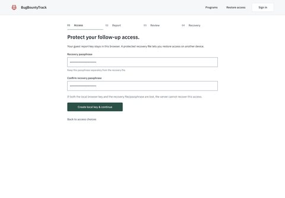
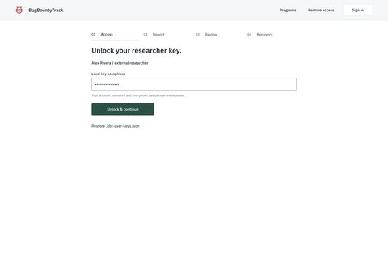
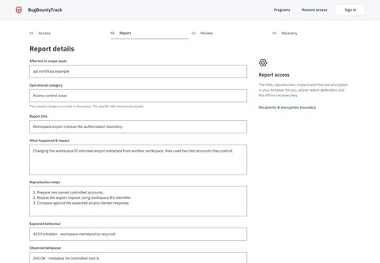
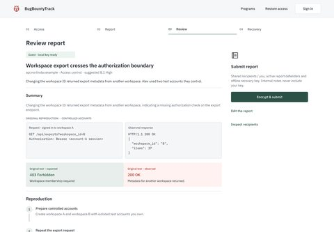
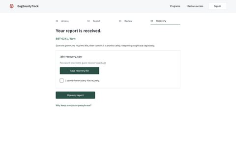
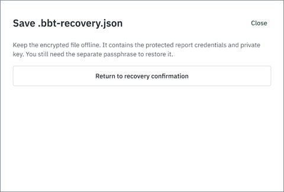
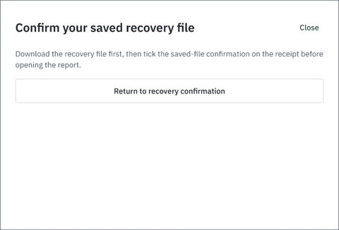
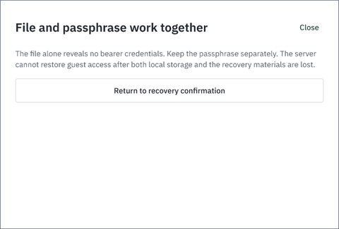
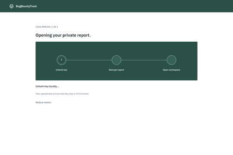
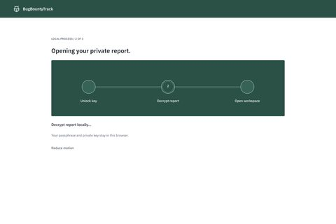
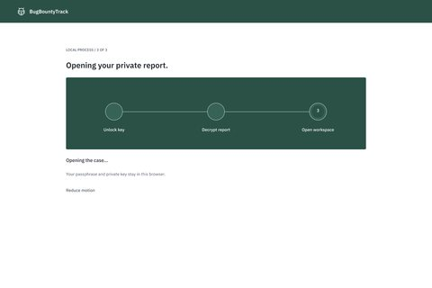
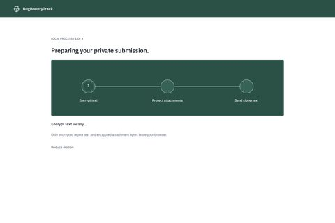
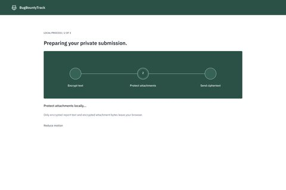
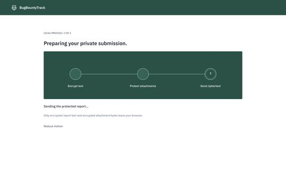
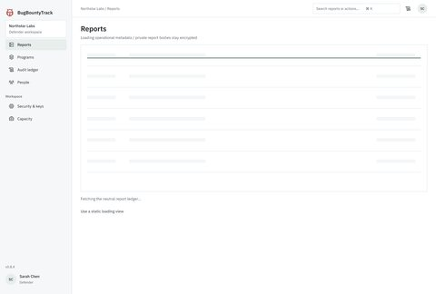
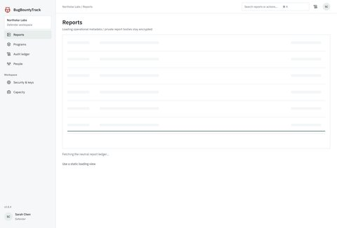
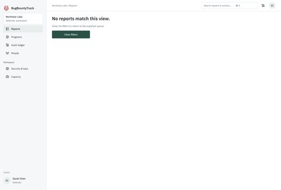
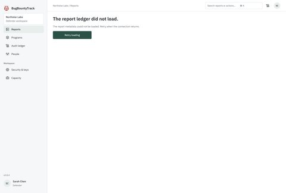
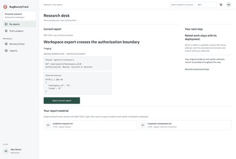
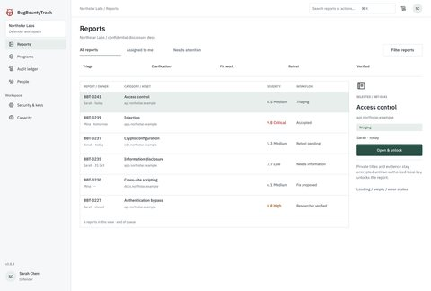
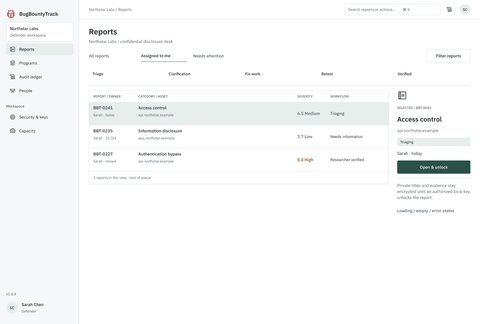
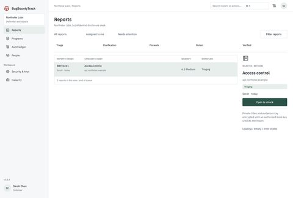
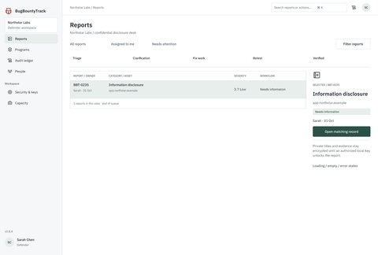
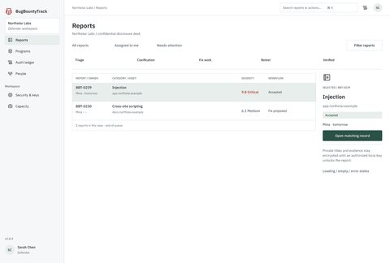
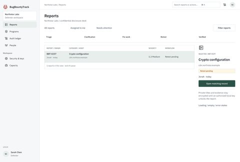
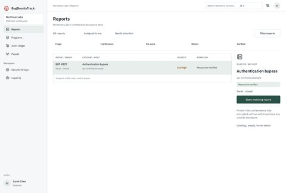
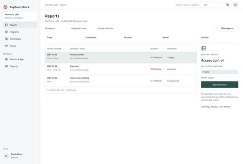
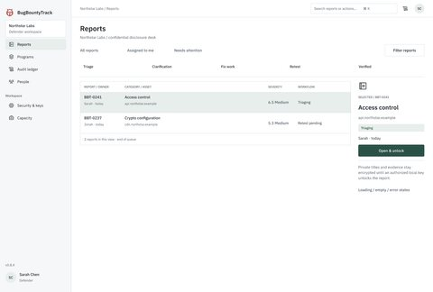
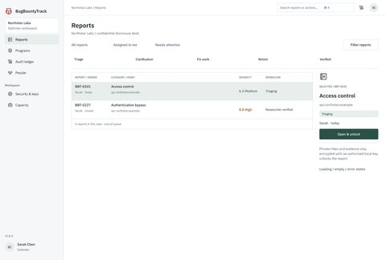
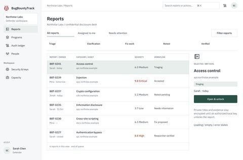
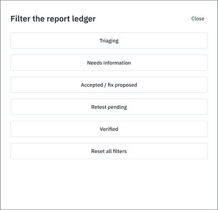
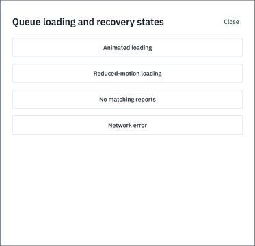
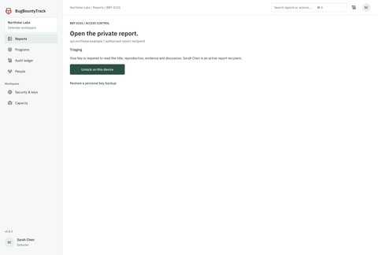
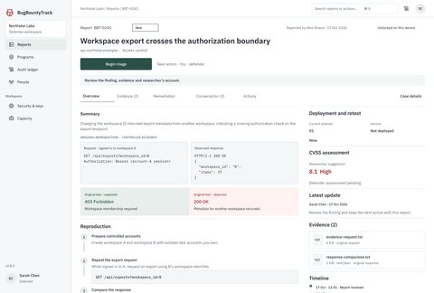
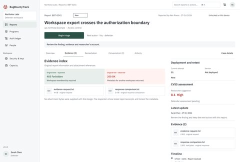
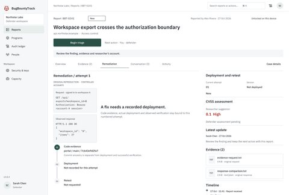
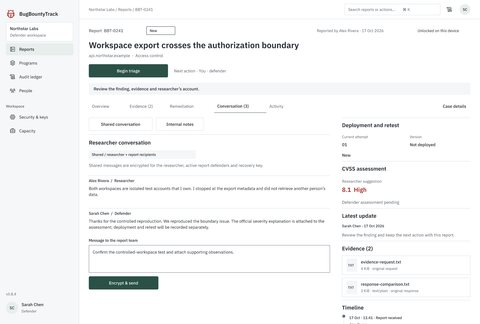
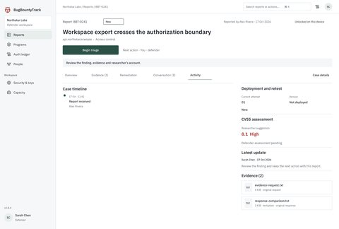
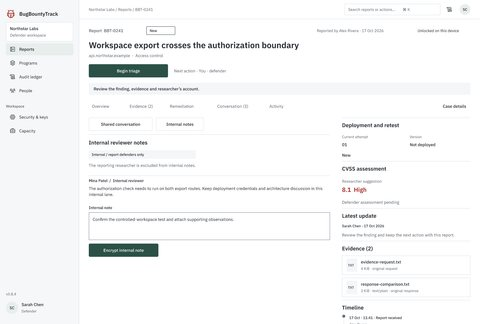
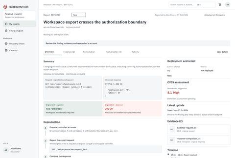
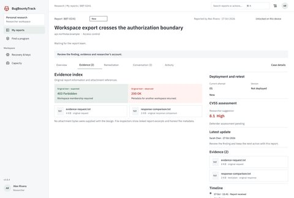
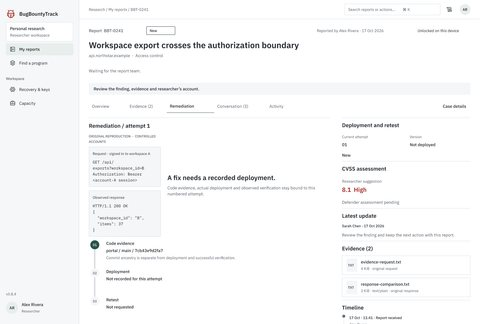
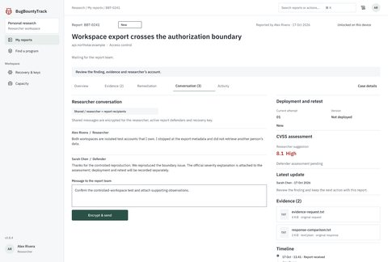
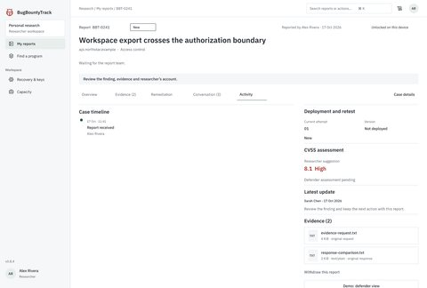
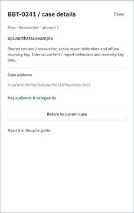
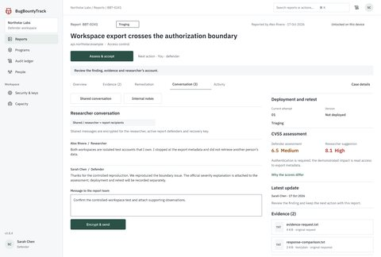